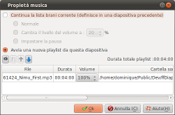

Introduzione
La finestra di proprietà
musica consente di specificare il brano musicale:

Questa finestra si richiama con un doppio click nella zona
musica delle diapositive nella timeline della finestra
principale.
Descrizione della finestra
La parte superiore della finestra
Principi funzionali
Il principio funzionale per i brani musicali è che
finché non si modificano le impostazioni, le impostazioni
precedenti si applicano.
Quindi, se:
- Diapositiva 1 - Definisce una elenco di riproduzione
- Diapositiva 2 - Non contiene impostazioni
- Diapositiva 3 - Non contiene impostazioni
- Diapositiva 4 - Definisce una elenco di riproduzione
- Diapositiva 5 - Non contiene impostazioni
Allora:
- Diapositiva 2 e 3 continuano a riprodurre l'elenco di
riproduzione definito nella diapositiva 1
- Diapositiva 5 continua a riprodurre l'elenco di
riproduzione definito nella diapositiva 4
Impostazioni per il brano musicale
| Continua la playlist
corrente |
Continua a eseguire la
lista di riproduzione definita da una diapositiva
precedente :
| Normale |
Nessuna
impostazioni specificata. |
| Cambia il
livello del volume |
Specifica che
d'ora in poi, il volume si riduce.
Questa opzione è particolarmente utile,
ad esempio , per ridurre il suono della musica
durante la riproduzione di un video.
Osservazione: Questa riduzione di volume
è definita solo per questa diapositiva. |
Imposta la
pausa
|
Mette in pausa
l'elenco di riproduzione corrente.
Osservazione : Questa pausa è definita
solo per questa diapositiva. |
|
Avvia una nuova playlist
|
Permette di creare una
nuova playlist.
Se una lista definita in una diapositiva precedente,
è ancora in riproduzione, viene fermata con un
effetto fade-out ( progressivo abbassamento del volume
del suono fino al completo arresto). |
La playlist ( parte inferiore della finestra)
Questa sezione è composta
da due parti:
- La barra degli strumenti che contiene i comandi per la
playlist
- L'elenco dei file musicali che compongono la playlist
La toolbar

|
Aggiunge un file alla
playlist
Una finestra di selezione file viene visualizzata,
consentendo di selezionare un file. |

|
Rimuove il
file selezionato dalla playlist. |

|
Cambia l'ordine in cui
i file musicali vengono riprodotti.
Sposta il file selezionato un passo su. |

|
Cambia l'ordine in cui
i file musicali vengono riprodotti.
Sposta il file selezionato un passo giù. |
La playlist
I file musicali sono elencati nell'ordine in cui verranno
riprodotti, da cima a fondo.
La colonna Volume definisce il "volume master" per il file.
Questo volume è indipendente da eventuali riduzioni del
volume che si definiscono nella parte superiore della
finestra.
Osservazione
L'effetto fade in/out e l'aumento
/diminuzione del volume si svolgono durante le transizioni delle
diapositive entranti. Di conseguenza:
- Occupano lo stesso tempo della transizione entrante.
- Se una diapositiva ha una transizione di entrata impostata
su "Nessuna transizione", l'effetto sonoro non è
progressivo ma istantaneo.
Vedi anche
ffDiaporama 1.0
 Definizione della traccia musicale
Definizione della traccia musicale